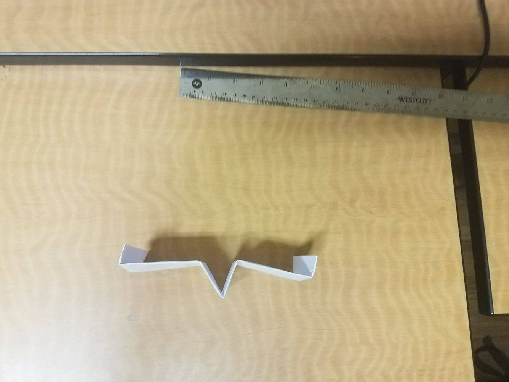

Project 3: Spy Plane
Difficulty: Easy
Estimated Time to Complete: 1-2 Minutes
Materials: 8.5 * 11 inches
Step 1: Start with a regular piece of rectangle paper.
Step 2: Fold the paper in half.
Step 3: Unfold and fold up about one inch (25.4mm) of the bottom.
Step 4: Continue folding up the bottom six more times.
Step 5: Rotate the paper so that the folded parts are on top.
Step 6: Turn it over and fold the left half over to the right.
Step 7: Make a crease about one inch from the left, then fold the right side over to the left.
Step 8: Turn the paper over.
Step 9: Now fold the left side over to the right to line up with the other wing.
Step 12: Fold in about an inch width of the edge of the wing.
Step 13: Turn the paper over.
Step 14: Now fold the fin for this wing as well and make sure it is even with the other fin.
Step 15: Unfold the plane and you are done.

Step 16: To throw the plane, hold the front part of it and throw it straight up or at an angle.